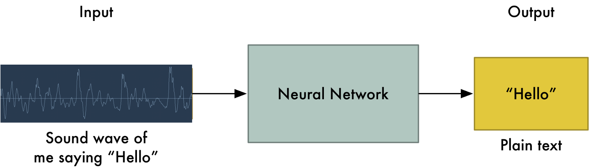

Neurocomputing
Convolutional neural networks
Deep Neural Network
The different layers of a deep network extract increasingly complex features.
- edges \rightarrow contours \rightarrow shapes \rightarrow objects

Problem with fully connected networks

Using full images as inputs leads to an explosion of the number of weights to be learned:
A moderately big 800 * 600 image has 480,000 pixels with RGB values.
The number of dimensions of the input space is 800 * 600 * 3 = 1.44 million.
Even if you take only 1000 neurons in the first hidden layer, you get 1.44 billion weights to learn, just for the first layer.
To obtain a generalization error in the range of 10%, you would need at least 14 billion training examples…
\epsilon \approx \frac{\text{VC}_\text{dim}}{N}
Problem with fully connected networks

Early features (edges) are usually local, there is no need to learn weights from the whole image.
Natural images are stationary: the statistics of the pixel in a small patch are the same, regardless the position on the image.
Idea: One only needs to extract features locally and share the weights between the different locations.
This is a convolution operation: a filter/kernel is applied on small patches and slided over the whole image.
Note: implemented as a cross-correlation, but it does not matter…
The convolutional layer


In a convolutional layer, d filters are defined with very small sizes (3x3, 5x5…).
Each filter is convoluted over the input image (or the previous layer) to create a feature map.
The set of d feature maps becomes a new 3D structure: a tensor.
\mathbf{h}_k = W_k \ast \mathbf{h}_{k-1} + \mathbf{b}_k
If the input image is 32x32x3, the resulting tensor will be 32x32xd.
The convolutional layer has only very few parameters: each feature map has 3x3x3 values in the filter plus a bias, i.e. 28 parameters.
As in image processing, a padding method must be chosen (what to do when a pixel is outside the image).
Max-pooling


The number of elements in a convolutional layer is still too high. We need to reduce the spatial dimension of a convolutional layer by downsampling it.
For each feature, a max-pooling layer takes the maximum value of a feature for each subregion of the image (generally 2x2).
Mean-pooling layers are also possible, but they are not used anymore.
Pooling allows translation invariance: the same input pattern will be detected whatever its position in the input image.
Convolutional Neural Networks

A convolutional neural network (CNN) is a cascade of convolution and pooling operations, extracting layer by layer increasingly complex features.
The spatial dimensions decrease after each pooling operation, but the number of extracted features increases after each convolution.
One usually stops when the spatial dimensions are around 7x7.
The last layers are fully connected (classical MLP).
Training a CNN uses backpropagation all along: the convolution and pooling operations are differentiable.
Backpropagation through a convolutional layer
- How can we do backpropagation through a convolutional layer?

In the example above, the four neurons of the feature map will receive a gradient from the upper layers.
How can we use it to learn the filter values and pass the gradient to the lower layers?
Backpropagation through a convolutional layer
- The filter just has to be flipped (180^o symmetry) before the convolution.

- The convolution operation is differentiable, so we can apply backpropagation and learn the filters.
\mathbf{h}_k = W_k \ast \mathbf{h}_{k-1} + \mathbf{b}_k
\frac{\partial \mathcal{L}(\theta)}{\partial \mathbf{h}_{k-1}} = W_k^F \ast \frac{\partial \mathcal{L}(\theta)}{\partial \mathbf{h}_{k}}
Backpropagation through a max-pooling layer

We can also use backpropagation through a max-pooling layer.
We need to remember which location was the winning location in order to backpropagate the gradient.
A max-pooling layer has no parameter, we do not need to learn anything, just to pass the gradient backwards.
Convolution with strides

Convolution with strides is an alternative to max-pooling layers.
The convolution simply “jumps” one pixel when sliding over the image (stride 2).
This results in a smaller feature map.
Much less operations to do than convolution with stride 1 followed by max-pooling, for the same performance.
Particularly useful for generative models (VAE, GAN, etc).
Dilated convolutions
A dilated convolution is a convolution with holes (à trous).
The filter has a bigger spatial extent than its number of values.

NeoCognitron

The Neocognitron (Fukushima, 1980) was actually the first CNN able to recognize handwritten digits.
Training is not based on backpropagation, but a set of biologically realistic learning rules (Add-if-silent, margined WTA).
Inspired by the human visual system.
LeNet
1998: LeNet (AT&T labs) was one of the first CNN able to learn from raw data using backpropagation.
It has two convolutional layers, two mean-pooling layers, two fully-connected layers and an output layer.
It uses tanh as the activation function and works on CPU only.
Used for handwriting recognition (for example ZIP codes).
AlexNet


2012: AlexNet (Toronto University) started the DL revolution by winning ImageNet 2012.
Similar architecture to LeNet, but trained on two GPUs using augmented data.
Uses ReLU, max-pooling, dropout, SGD with momentum, L2 regularization.
VGG-16

2014: VGG-16 (Visual Geometry Group, Oxford) placed second at ImageNet 2014.
It went much deeper than AlexNet with 16 parameterized layers (a VGG-19 version is also available with 19 layers).
Its main novelty is that two convolutions are made successively before the max-pooling, implicitly increasing the receptive field (2 consecutive 3x3 filters cover 5x5 pixels).
Drawback: 140M parameters (mostly from the last convolutional layer to the first fully connected) quickly fill up the memory of the GPU.
GoogLeNet - Inception v1

2014: GoogLeNet (Google Brain) used Inception modules (Network-in-Network) to further complexify each stage.
Won ImageNet 2014 with 22 layers. Dropout, SGD with Nesterov momentum.
Inception module

Inside GoogleNet, each Inception module learns features at different resolutions using convolutions and max poolings of different sizes.
1x1 convolutions are shared MLPS: they transform a (w, h, d_1) tensor into (w, h, d_2) pixel per pixel.
The resulting feature maps are concatenated along the feature dimension and passed to the next module.
GoogLeNet - Inception v1
- Three softmax layers predict the classes at different levels of the network. Combined loss:
\mathcal{L}(\theta) = \mathbb{E}_\mathcal{D} [- \mathbf{t} \, \log \mathbf{y}_1 - \mathbf{t} \, \log \mathbf{y}_2 - \mathbf{t} \, \log \mathbf{y}_3]
Only the deeper softmax layer matters for the prediction.
The additional losses improve convergence by fight vanishing gradients: the early layers get useful gradients from the lower softmax layers.
Inception networks

Several variants of GoogleNet have been later proposed: Inception v2, v3, InceptionResNet, Xception…
Xception has currently the best top-1 accuracy on ImageNet: 126 layers, 22M parameters (88 MB).
Pretrained weights are available in
keras:
tf.keras.applications.Xception(include_top=True, weights="imagenet")Residual networks : ResNets
2015: ResNet (Microsoft). Won ImageNet 2015.
Instead of learning to transform an input directly with \mathbf{h}_n = f_W(\mathbf{h}_{n-1}), a residual layer learns to represent the residual between the output and the input:
\mathbf{h}_n = f_W(\mathbf{h}_{n-1}) + \mathbf{h}_{n-1} \quad \rightarrow \quad f_W(\mathbf{h}_{n-1}) = \mathbf{h}_n - \mathbf{h}_{n-1}

These skip connections allow the network to decide how deep it has to be.
If the layer is not needed, the residual layer learns to output 0.
Residual networks : ResNets
- Skip connections help overcome the vanishing gradients problem, as the contribution of bypassed layers to the backpropagated gradient is 1.
\mathbf{h}_n = f_W(\mathbf{h}_{n-1}) + \mathbf{h}_{n-1}
\frac{\partial \mathbf{h}_n}{\partial \mathbf{h}_{n-1}} = \frac{\partial f_W(\mathbf{h}_{n-1})}{\partial \mathbf{h}_{n-1}} + 1
The norm of the gradient stays roughly around one, limiting vanishing.
Skip connections can bypass whole blocks of layers.
ResNet can have many layers without vanishing gradients. The most popular variants are:
- ResNet-50.
- ResNet-101.
- ResNet-152.
It was the first network to make an heavy use of batch normalization.

HighNets: Highway networks

- Highway networks (IDSIA) are residual networks which also learn to balance inputs with feature extraction:
\mathbf{h}_n = T_{W'} \, f_W(h_{n-1}) + (1 - T_{W'}) \, h_{n-1}
The balance between the primary pathway and the skip pathway adapts to the task.
Has been used up to 1000 layers.
Improved state-of-the-art accuracy on MNIST and CIFAR-10.
Comparison of the most popular networks
Several criteria have to be considered when choosing an architecture:
Accuracy on ImageNet.
Number of parameters (RAM consumption).
Speed (flops).

Facial recognition

Facebook used 4.4 million annotated faces from 4030 users to train DeepFace.
Accuracy of 97.35% for recognizing faces, on par with humans.
Used now to recognize new faces from single examples (transfer learning, one-shot learning).
Pose estimation
PoseNet is a Inception-based CNN able to predict 3D information from 2D images.
It can be for example the calibration matrix of a camera, 3D coordinates of joints or facial features.
There is a free tensorflow.js implementation that can be used in the browser.


Speech recognition


To perform speech recognition, one could treat speech signals like images: one direction is time, the other are frequencies (e.g. mel spectrum).
A CNN can learn to associate phonemes to the corresponding signal.
DeepSpeech from Baidu is one of the state-of-the-art approaches.
Convolutional networks can be used on any signals where early features are local.
It uses additionally recurrent networks, which we will see later.
Wavenet : text-to-speech synthesis
Text-To-Speech (TTS) is also possible using CNNs.
Google Home relies on Wavenet, a complex CNN using dilated convolutions to grasp long-term dependencies.

Transfer learning / Domain adaptation
Myth: ones needs at least one million labeled examples to use deep learning.
This is true if you train the CNN end-to-end with randomly initialized weights.
But there are alternatives:
Unsupervised learning (autoencoders) may help extract useful representations using only images.
Transfer learning allows to re-use weights obtained from a related task/domain.
Transfer learning / Domain adaptation
- Take a classical network (VGG-16, Inception, ResNet, etc.) trained on ImageNet (if your task is object recognition).
Off-the-shelf
Cut the network before the last layer and use directly the high-level feature representation.
Use a shallow classifier directly on these representations (not obligatorily NN).
Fine-tuning
- Use the trained weights as initial weight values and re-train the network on your data (often only the last layers, the early ones are frozen).

Example of transfer learning

Microsoft wanted a system to automatically detect snow leopards into the wild, but there were not enough labelled images to train a deep network end-to-end.
They used a pretrained ResNet50 as a feature extractor for a simple logistic regression classifier.
Transfer learning in keras
- Keras provides pre-trained CNNs that can be used as feature extractors:
from tf.keras.applications.vgg16 import VGG16
# Download VGG without the FC layers
model = VGG16(include_top=False,
input_shape=(300, 300, 3))
# Freeze learning in VGG16
for layer in model.layers:
layer.trainable = False
# Add a fresh MLP on top
flat1 = Flatten()(model.layers[-1].output)
class1 = Dense(1024, activation='relu')(flat1)
output = Dense(10, activation='softmax')(class1)
# New model
model = Model(
inputs=model.inputs, outputs=output)
- See https://keras.io/api/applications/ for the full list of pretrained networks.
ImageNet recognition challenge: object recognition
- Since 2016, only ensembles of existing networks win the competitions.

Ensemble learning: bagging
- Bagging methods (bootstrap aggregation) trains multiple classifiers on randomly sampled subsets of the data.

{kind=link}
A random forest is a bagging method for decision trees, where the data and features are sampled..
One can use majority vote, unweighted average, weighted average or even a meta-learner to form the final decision.